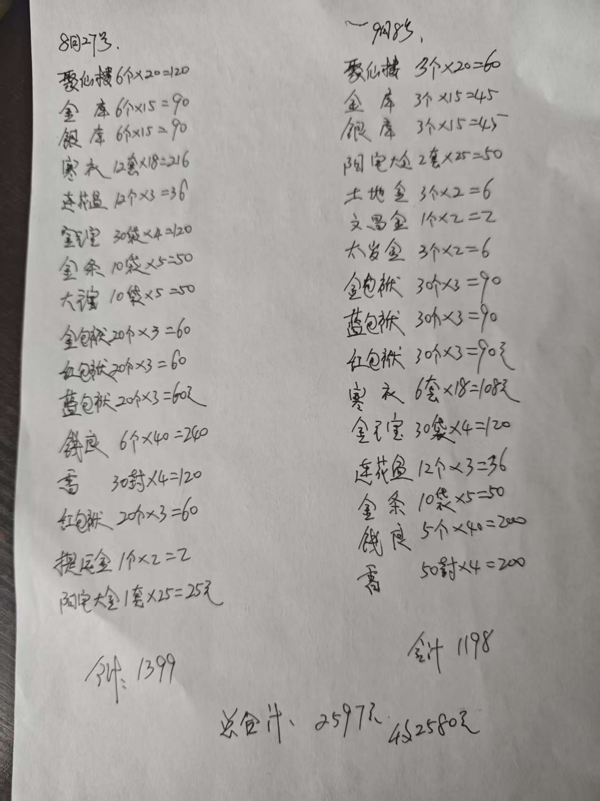

20260909为学生祖先置办香火供品
民间文化风水布局 原始对话记录
这就是烧的元宝
[憨笑][憨笑][憨笑]
佛堂里再上香，供灯，水果，
一不小心我还贴上
[憨笑][憨笑][憨笑]
看似我收的不少
不欺鬼神，尽量打点到最好
[合十][合十][合十]感恩师傅！为祖先置办香火供品，取之有度、诚心实意、不图厚利，这份厚道难得，这份真诚让人敬重，由衷感谢师傅为我费心打点，您辛苦了[玫瑰][玫瑰][玫瑰]
[憨笑][憨笑]这只是香火
还要供奉，鸡，鱼，猪脸，豆腐，鲜果，糕点，酒水
所以，三百化解太岁，根本没法做，一般都是缓一缓，一块做
供奉轻了，解不了
华严经，不仅详细说了十地菩萨的发心，层次，细节修为
现在读到佛的发心，次第境界，详细修法
这个就很难听懂了
洗脑的力量是无穷的
受戒之后，不仅四点起床，十点也不睡
肉也吃的少了
酒也喝的少了
为学生祖先置办香火供品的规矩
一、本页是什么
本页是一段受托办事的记录：师傅替学生为"祖先"置办香火供品，事主发来长段致谢，师傅回了几条补充。记录不长，却把祭祖供奉的两笔账、一个态度讲得清楚。这里按民俗整理。
二、祖先供奉的两笔账
记录把供奉分成两层：
- 香火：即元宝、香、灯、果一类，按本集群《祭祖方法 用品……》的常规置办；
- 供品：记录说"这只是香火，还要供奉，鸡、鱼、猪脸、豆腐、鲜果、糕点、酒水"。
也就是说，香火是"通请、资粮"，供品是"实食"，两者要配齐才算完整。原文的态度是"不欺鬼神，尽量打点到最好"。
三、供品清单速查
| 类别 | 具体品项 |
|---|---|
| 荤供 | 鸡、鱼、猪脸 |
| 素供 | 豆腐 |
| 果品 | 鲜果 |
| 点心 | 糕点 |
| 饮品 | 酒水 |
| 香火 | 元宝、香、灯 |
这套搭配与山东一带民间祭祖的"三牲加素供"路子相近，具体品项随各地与家境调整。
四、"取之有度、诚心实意"的态度
事主的致谢里有一句评价，很能概括这件事的分寸："取之有度、诚心实意、不图厚利"。记录由此透出民间祭祖的一条底线——代为置办者不借机抬价、不图厚利；办事者则诚心去打点。这与本集群"供奉要重"的主张并不矛盾：重的是心意齐备，不是排场虚耗。
五、供奉的分量与做法安排
记录里有一句关键的解释："供奉轻了，解不了。"因此凡是化解类、超度类的事，往往不是"三百"这样一笔小供奉能办妥的，常"缓一缓，一块做"——即攒到一次，把供品备足一起办。这句既说明民间对"分量"的看重，也提醒外人：具体金额与做法因人因事而异，原文的"三百"只是一个参照说法，不宜当作标准价目。
六、常见问题
问：供品一定要有荤食吗？ 本页记录含鸡、鱼、猪脸等荤供，但这属地方习惯，素食供奉亦常见。
问：供奉不足真的"解不了"吗？ 这是记录中的说法，属民间观念，无实证，本文不作担保。
问：为什么要把事情攒在一起办？ 记录的理由是"供奉轻了不行"，故合并置办更省事。具体如何安排自便。
七、提醒
- 祖先供奉分"香火"与"供品"两笔，宜配齐。
- 代为办事以"取之有度、不图厚利"为分寸。
- 本文只作民俗整理，文中金额仅系转述，不构成任何收费引导。